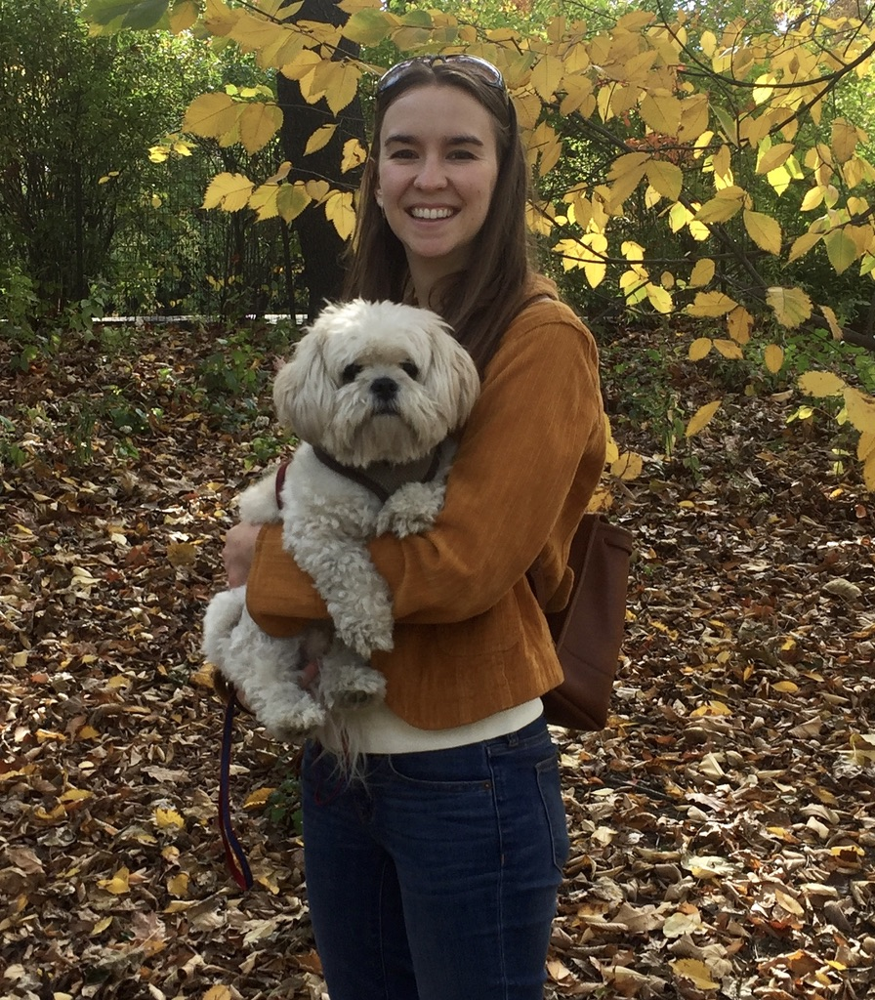

| 
CV | Google Scholar | Github | Twitter |
Amanda Coston is a PhD student in Machine Learning and Public Policy at Carnegie Mellon University (CMU). She is interested in how machine learning can improve decision-making in societally high-stakes settings. She is particularly interested in how to make decision-making systems more reliable and more equitable. Her research addresses real-world data problems that challenge the reliability of algorithmic decision support systems and data-driven policy-making. A central focus of her research is identifying when algorithms, data used for policy-making, and human decisions disproportionately impact marginalized groups. Much of her work uses doubly-robust techniques for bias correction. She is advised by Alexandra Chouldechova and Edward H. Kennedy. Amanda is an NSF GRFP Fellow and K & L Gates Presidential Fellow in Ethics and Computational Technologies. In 2019 she was a recipient of the Tata Consultancy Services (TCS) Presidential Fellowship. Her research on counterfactual risk assessments and evaluation for child welfare screening won the 2018 Suresh Konda Best First Student Research Paper Award from the Heinz College. |
{kind=link}
| February 12, 2022 | Accepted to University of Michigan Future Leaders Summit hosted by Michigan Institute for Data Science (MIDAS) |
| February 4, 2022 | Proposed thesis, Principled Machine Learning for High-stakes Decisions. Committee: Ed Kennedy, Alex Chouldechova, Hoda Heidari, & Sendhil Mullainathan |
| February 2, 2022 | Awarded the Meta Research PhD Fellowship! Thanks Meta Research for the support! |
| October 21, 2021 | |
| September, 2021 | Joined the Graduate Student Assembly Campus Affairs Committee where I will focus on sustainability efforts at CMU. |
| June 07, 2021 | Started internship at Facebook Responsible AI. |
| May 18, 2021 | Featured on Placekey Spotlight. |
| May 08, 2021 | Our research paper on characterizing fairness over the set of good models under selective labels accepted at ICML 2021. |
| May 04, 2021 | |
| April 22, 2021 | |
| April 16, 2021 | CMU ML Blog Post on counterfactual predictions under runtime confounding. |
| April 05, 2021 | The Wall Street Journal featured our research on auditing mobility data for demographic bias! The piece is titled Smartphone Location Data Can Leave Out Those Most Hit by Covid-19. |
| Nov. 18, 2020 | VentureBeat featured our research on auditing mobility data for demographic bias! The piece is titled Stanford and Carnegie Mellon find race and age bias in mobility data that drives COVID-19 policy. |
 |
ACM Conference on Fairness, Accountability, and Transparency (FAccT), 2021
Abstract |
Paper |
ArXiv |
Talk
Anonymized smartphone-based mobility data has been widely adopted in devising and evaluating COVID-19 response strategies such as the targeting of public health resources. Yet little attention has been paid to measurement validity and demographic bias, due in part to the lack of documentation about which users are represented as well as the challenge of obtaining ground truth data on unique visits and demographics. We illustrate how linking large-scale administrative data can enable auditing mobility data for bias in the absence of demographic information and ground truth labels. More precisely, we show that linking voter roll data containing individual-level voter turnout for specific voting locations along with race and age can facilitate the construction of rigorous bias and reliability tests. Using data from North Carolina's 2018 general election, these tests illuminate a sampling bias that is particularly noteworthy in the pandemic context: older and non-white voters are less likely to be captured by mobility data. We show that allocating public health resources based on such mobility data could disproportionately harm high-risk elderly and minority groups. |
|
Abstract |
Paper |
ArXiv |
Talk
Algorithmic risk assessments are used to inform decisions in a wide variety of high-stakes settings. Often multiple predictive models deliver similar overall performance but differ markedly in their predictions for individual cases, an empirical phenomenon known as the "Rashomon Effect." These models may have different properties over various groups, and therefore have different predictive fairness properties. We develop a framework for characterizing predictive fairness properties over the set of models that deliver similar overall performance, or "the set of good models." Our framework addresses the empirically relevant challenge of selectively labelled data in the setting where the selection decision and outcome are unconfounded given the observed data features. Our framework can be used to 1) replace an existing model with one that has better fairness properties; or 2) audit for predictive bias. We illustrate these uses cases on a real-world credit-scoring task and a recidivism prediction task. |
|
 |
Abstract |
Paper |
ArXiv |
Blog
Algorithms are commonly used to predict outcomes under a particular decision or intervention, such as predicting whether an offender will succeed on parole if placed under minimal supervision. Generally, to learn such counterfactual prediction models from observational data on historical decisions and corresponding outcomes, one must measure all factors that jointly affect the outcomes and the decision taken. Motivated by decision support applications, we study the counterfactual prediction task in the setting where all relevant factors are captured in the historical data, but it is either undesirable or impermissible to use some such factors in the prediction model. We refer to this setting as runtime confounding. We propose a doubly-robust procedure for learning counterfactual prediction models in this setting. Our theoretical analysis and experimental results suggest that our method often outperforms competing approaches. We also present a validation procedure for evaluating the performance of counterfactual prediction methods. |
|
Abstract |
Paper |
ArXiv |
Talk
Algorithmic risk assessments are increasingly used to help humans make decisions in high-stakes settings, such as medicine, criminal justice and education. In each of these cases, the purpose of the risk assessment tool is to inform actions, such as medical treatments or release conditions, often with the aim of reducing the likelihood of an adverse event such as hospital readmission or recidivism. Problematically, most tools are trained and evaluated on historical data in which the outcomes observed depend on the historical decision-making policy. These tools thus reflect risk under the historical policy, rather than under the different decision options that the tool is intended to inform. Even when tools are constructed to predict risk under a specific decision, they are often improperly evaluated as predictors of the target outcome. Focusing on the evaluation task, in this paper we define counterfactual analogues of common predictive performance and algorithmic fairness metrics that we argue are better suited for the decision-making context. We introduce a new method for estimating the proposed metrics using doubly robust estimation. We provide theoretical results that show that only under strong conditions can fairness according to the standard metric and the counterfactual metric simultaneously hold. Consequently, fairness-promoting methods that target parity in a standard fairness metric may --- and as we show empirically, do --- induce greater imbalance in the counterfactual analogue. We provide empirical comparisons on both synthetic data and a real world child welfare dataset to demonstrate how the proposed method improves upon standard practice. |
|
 |
(ICLR), 2020
Abstract |
Paper |
ArXiv |
Talk
We propose a novel algorithm for learning fair representations that can simultaneously mitigate two notions of disparity among different demographic subgroups in the classification setting. Two key components underpinning the design of our algorithm are balanced error rate and conditional alignment of representations. We show how these two components contribute to ensuring accuracy parity and equalized false-positive and false-negative rates across groups without impacting demographic parity. Furthermore, we also demonstrate both in theory and on two real-world experiments that the proposed algorithm leads to a better utility-fairness trade-off on balanced datasets compared with existing algorithms on learning fair representations for classification. |
|
International Conference on Artificial Intelligence in Medicine, 2020
Abstract |
Paper |
ArXiv
In time-to-event prediction problems, a standard approach to estimating an interpretable model is to use Cox proportional hazards, where features are selected based on lasso regularization or stepwise regression. However, these Cox-based models do not learn how different features relate. As an alternative, we present an interpretable neural network approach to jointly learn a survival model to predict time-to-event outcomes while simultaneously learning how features relate in terms of a topic model. In particular, we model each subject as a distribution over "topics", which are learned from clinical features as to help predict a time-to-event outcome. From a technical standpoint, we extend existing neural topic modeling approaches to also minimize a survival analysis loss function. We study the effectiveness of this approach on seven healthcare datasets on predicting time until death as well as hospital ICU length of stay, where we find that neural survival-supervised topic models achieves competitive accuracy with existing approaches while yielding interpretable clinical "topics" that explain feature relationships. |
|
 |
Abstract |
Paper
Risk assessment is a growing use for machine learning models. When used in high-stakes applications, especially ones regulated by anti-discrimination laws or governed by societal norms for fairness, it is important to ensure that learned models do not propagate and scale any biases that may exist in training data. In this paper, we add on an additional challenge beyond fairness: unsupervised domain adaptation to covariate shift between a source and target distribution. Motivated by the real-world problem of risk assessment in new markets for health insurance in the United States and mobile money-based loans in East Africa, we provide a precise formulation of the machine learning with covariate shift and score parity problem. Our formulation focuses on situations in which protected attributes are not available in either the source or target domain. We propose two new weighting methods: prevalence-constrained covariate shift (PCCS) which does not require protected attributes in the target domain and target-fair covariate shift (TFCS) which does not require protected attributes in the source domain. We empirically demonstrate their efficacy in two applications. |
Opioid EpidemicIn 2017, drug overdoses claimed more lives than car accidents. The below maps show opioid hotspots across the United States at various granularities. We used a similarity metric of death rate trajectories derived from Fisher's exact test to perform hierarchical clustering. |
| 2022 | Awarded the Meta Research PhD Fellowship. |
| 2020 | Awarded the K & L Gates Presidential Fellowship in Ethics and Computational Technologies. |
| 2019 | Awarded the Tata Consultancy Services (TCS) Presidential Fellowship. |
| 2018 | Awarded the 2018 Suresh Konda Best First Student Research Paper Award from the Heinz College for counterfactual risk assessments and evaluation for child welfare screening. |
| 2018 | Awarded the NSF GRFP Fellowship. |
| Amanda particularly enjoys teaching and mentorship opportunties. She served as a teaching assistant for Matt Gormley and Tom Mitchell's Introduction to Machine Learning in 2021. She served as a project lead of the AI4ALL summer program at CMU, where she introduced high school students to algorithmic fairness in the criminal justice system using the COMPAS dataset (see Github project). She also participated in the AI undergradate mentoring program at CMU. |
| 2021 | Reviewer for ICLR 2022. |
| 2021 | Reviewer for AISTATS 2022. |
| 2021 | Reviewer for Data Mining and Knowledge Discovery. |
| 2021 | Reviewer for Journal of Royal Statistical Society Series B. |
| 2021 | Programme committee member for FAccT 2021. |
| 2021 | Area chair for the ICLR 2021 Workshop on Responsible AI. |
| 2021 | Reviewer for NeurIPS 2021. |
| 2021 | Reviewer for ICML 2021. |
| 2020 | Programme committee member for FAT* 2020. |
| 2020 | Programme committee member for AIES 2020. |
| 2020 | Programme committee member for AAAI 2020 Emerging Track on AI for Social Impact. |
| 2020 | Reviewer for NeurIPS 2020. |
| 2020 | Reviewer for ICML 2020. |
| 2019 | Programme committee member for IJCAI 2019 Workshop on AI for Social Good. |
| 2019 | Co-organizer if the Fairness, Ethics, Accountability, and Transparency (FEAT) reading group at CMU. |
| 2018, 19 | Co-organizer of the ML4D workshop at NeurIPS 2018 and NeurIPS 2019, which brings machine learning researchers together with field practitioners to discuss ML in the context of the developing world. The workshop explored the risks and challenges of using ML4D. |
| Amanda graduated from Princeton University in 2013 with a degree in computer science and a certificate in the Princeton School of Public Policy and International Affairs. For her undergraduate thesis, she analyzed how machine learning techniques can improve the diagnosis of pediatric tuberculosis in collaboration with Jocelyn Tang ('14) and under the guidance of Robert Schapire. In 2019 she earned her Master of Science in Machine Learning from CMU. |
|
Hamburg Hall |
Template modified from here |